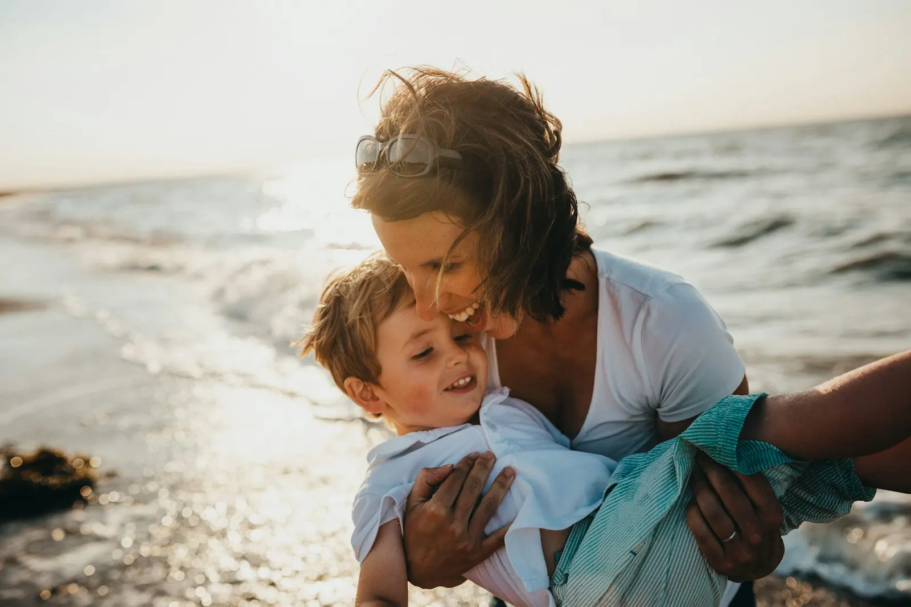
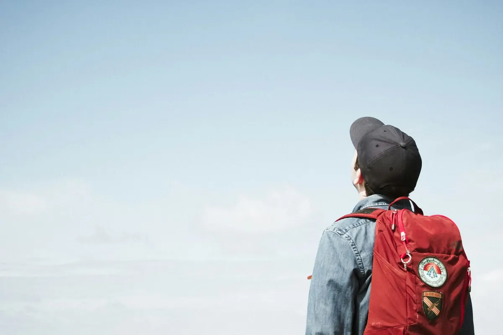
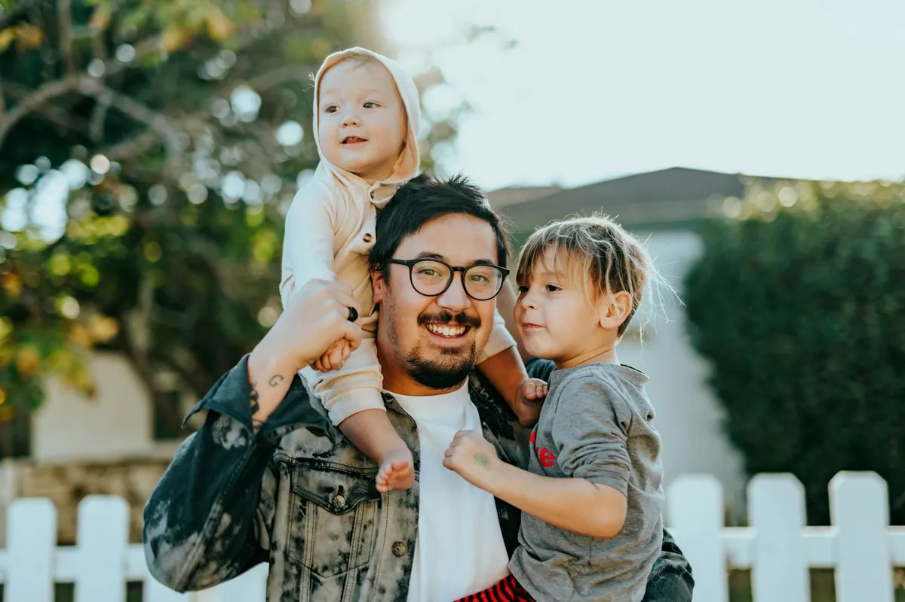
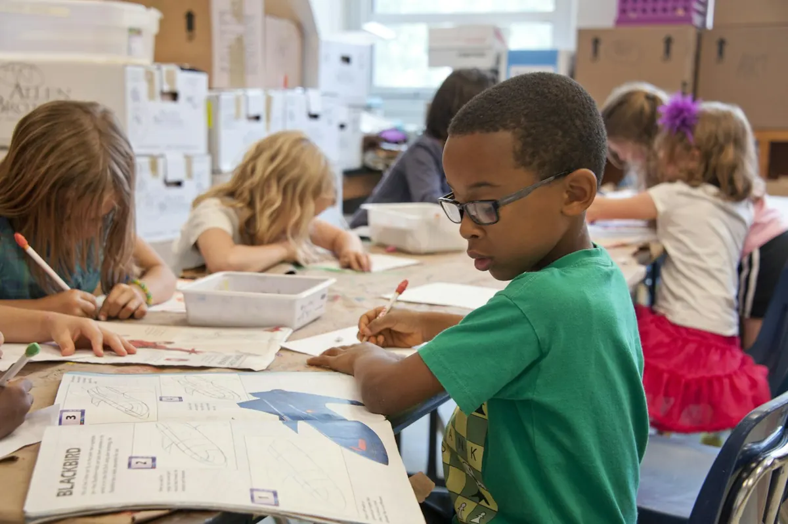
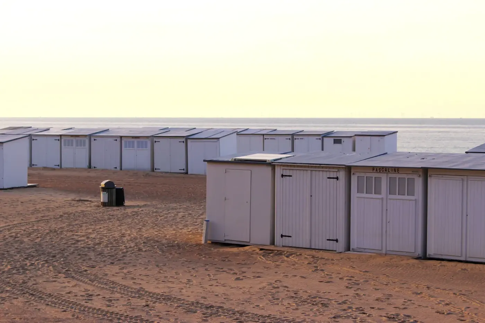
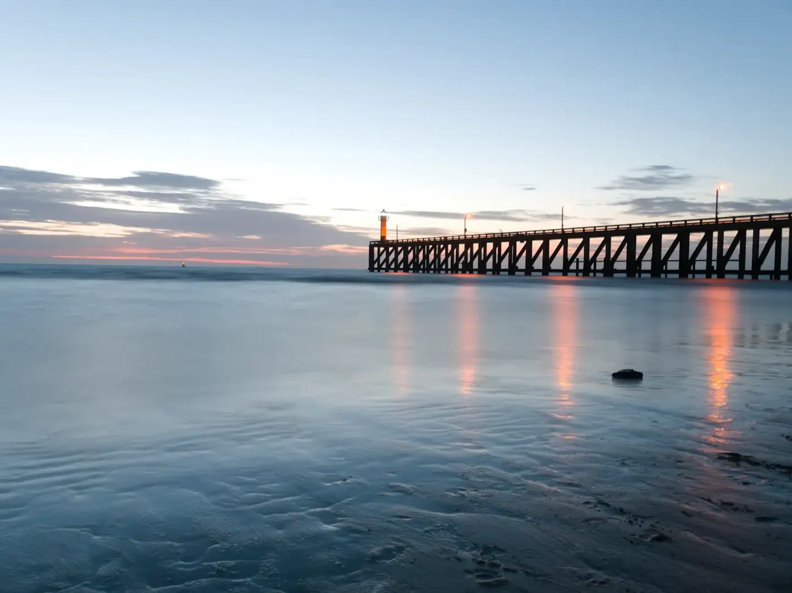
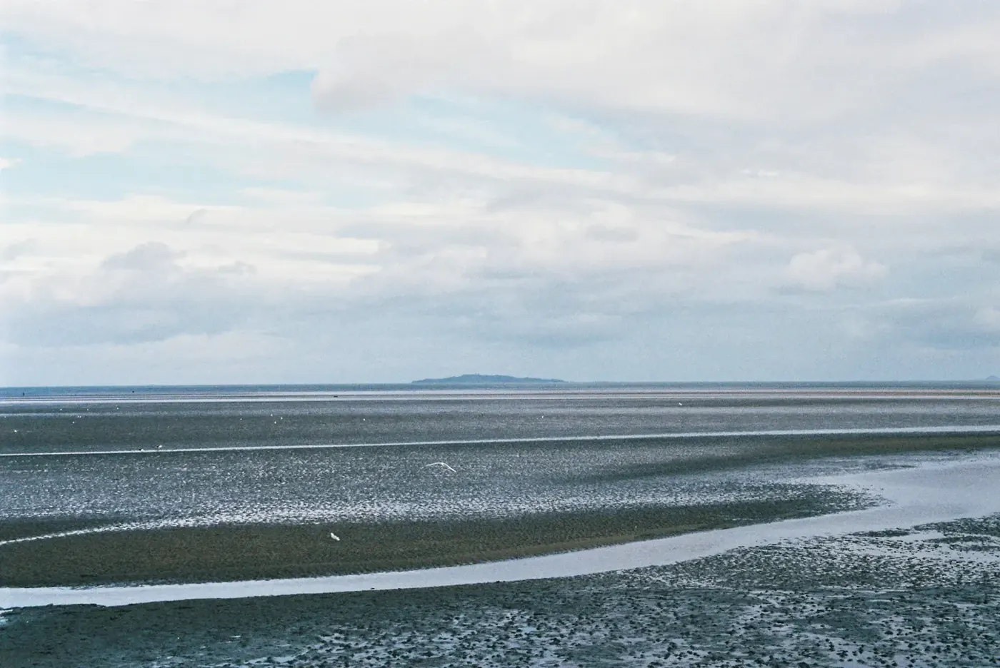

Een advocaat die naast uw kind staat.
Ik ben Christel Desmyter, advocaat in Veurne. Moet uw zoon of dochter voor de jeugdrechter komen, of wordt hij of zij verhoord door de politie? Dan zorg ik dat uw kind weet wat er gebeurt, en dat het gehoord wordt.

rechtVeurne
Als het om kinderen en jongeren gaat.
Jeugdrecht is mijn vak. Kies wat bij uw situatie past: dan staat het al ingevuld in het contactformulier en weet ik bij het eerste telefoontje waarover het gaat.

01Voor de jeugdrechter
Uw kind wordt verdacht van een feit en moet voor de jeugdrechter verschijnen.
Vraag hierover raadEen verhoor
Een uitnodiging van de politie. Voor en tijdens het verhoor sta ik naast u of uw kind.
Vraag hierover raadZorgen thuis
Er kwam een melding over de opvoeding, of de jeugdrechter moet beslissen over hulp.
Vraag hierover raad
04Vragen als ouder
Wat betekent een maatregel, wie beslist, en wat kan u zelf doen? U krijgt een eerlijk antwoord.
Vraag hierover raadWat gebeurt er nu?
Een brief van het parket of een telefoon van de politie zet een gezin op zijn kop. Kies uw situatie en lees in vier stappen hoe het meestal verloopt, en wat ik dan doe.
Wat betekent dat woord in die brief?
Brieven van het parket of de rechtbank staan vol woorden die niemand dagelijks gebruikt. Tik op een woord, dan leg ik het kort uit.

Zonder vakjargonBen je jonger dan 18? Dit moet je weten.
Een advocaat is er voor jou, niet voor de politie en niet voor je ouders. Je mag mij zelf bellen, ook als je niet zeker weet of je een advocaat nodig hebt.
Voor een verhoor als verdachte praat je eerst alleen met een advocaat. Daar kan je als minderjarige geen afstand van doen.
Een minderjarige heeft recht op een advocaat die niets kost. Ook als je ouders veel verdienen.
Wat je me vertelt, valt onder het beroepsgeheim. Ik vertel het niet door zonder jouw akkoord.
Bij de jeugdrechter zeg ik wat jij wil en wat jij nodig hebt. Daarvoor ben ik er.
Zo verloopt een eerste gesprek.
U belt of mailt
Op 058 62 64 96 of via het formulier. U vertelt kort wat er speelt, en we spreken een moment af.
We zitten samen
Op kantoor in de Boterweegschaalstraat. Breng mee wat u kreeg: de uitnodiging, de brief van het parket of de beslissing.
U weet waar u staat
U hoort welke stappen er komen, wie wat beslist en wat het voor uw kind betekent. In gewone woorden.
uit 10 reviews op Google. Mensen uit Veurne en de Westkust vonden de weg naar dit kantoor.
Lees de reviews op GoogleMidden in Veurne.
De Boterweegschaalstraat ligt in het oude centrum, vlak bij de Appelmarkt en de Sint-Niklaaskerk. Voor wie van verder komt aan de Westkust is het een korte rit.
- 2 minte voet naar de Grote Markt
- 2 minnaar de Sint-Niklaaskerk
- 8 minwandelen vanaf het station

De Westkust
Een korte rit van de zee
Wat ouders mij vaak vragen
Staat uw vraag er niet bij? Bel naar het kantoor op 058 62 64 96 of stuur een mail.
Wat kost een advocaat voor mijn kind?
Voor een minderjarige is de bijstand van een advocaat kosteloos. Gaat het om uw eigen vragen als ouder, dan bespreken we de kosten vooraf.
Kan mijn kind een advocaat weigeren bij een verhoor?
Nee. Een minderjarige die als verdachte verhoord wordt, kan geen afstand doen van het recht op een advocaat. Dat is er om uw kind te beschermen.
Mag ik zelf kiezen welke advocaat mijn kind bijstaat?
Ja. U of uw kind kan vragen om een bepaalde advocaat te verwittigen. Lukt dat niet op tijd, dan komt er een advocaat van de permanentiedienst.
Is wat mijn kind vertelt vertrouwelijk?
Ja. Een advocaat heeft beroepsgeheim, ook tegenover de ouders. Dat klinkt soms vreemd, maar zo durft een jongere vrijuit te praten.
Sta ik als ouder dan buiten spel?
Zeker niet. De advocaat van uw kind staat aan de kant van uw kind, maar uw vragen als ouder zijn altijd welkom. Ik leg u graag uit wat er gebeurt en wat u zelf kan doen.
Waar is het kantoor?
In de Boterweegschaalstraat 11 in Veurne, op een paar minuten wandelen van de Grote Markt. Vanaf het station is het ongeveer acht minuten te voet.
Bel, mail of kom langs.
Een telefoontje is vaak genoeg om te weten wat de volgende stap is. Wil u liever schrijven, dan kan dat via het formulier.